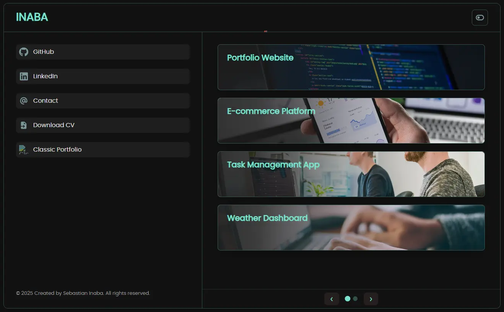
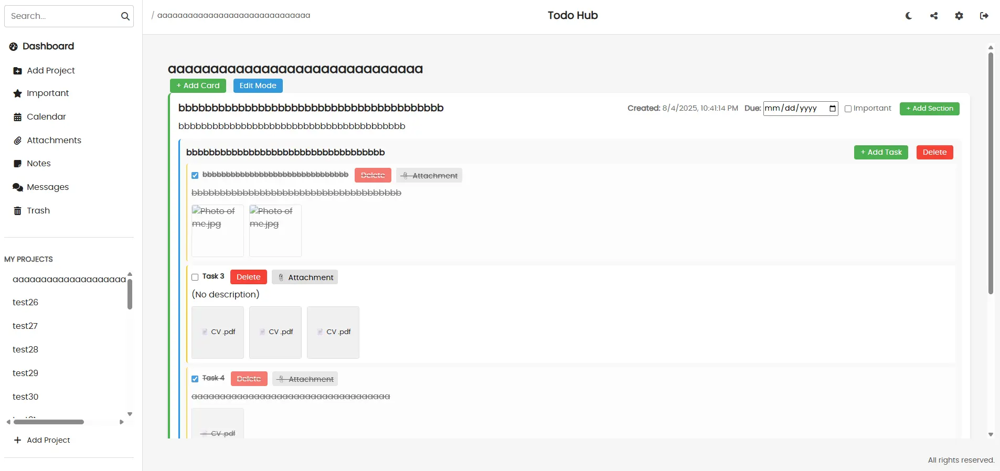

Projects

My New Portfolio
A modern and updated version
HTML, CSS, JavaScript

ToDoHub
A full CRUD to do application with a lot of features
HTML, CSS, JavaScript, Figma, Express.js, MongoDB, Supabase